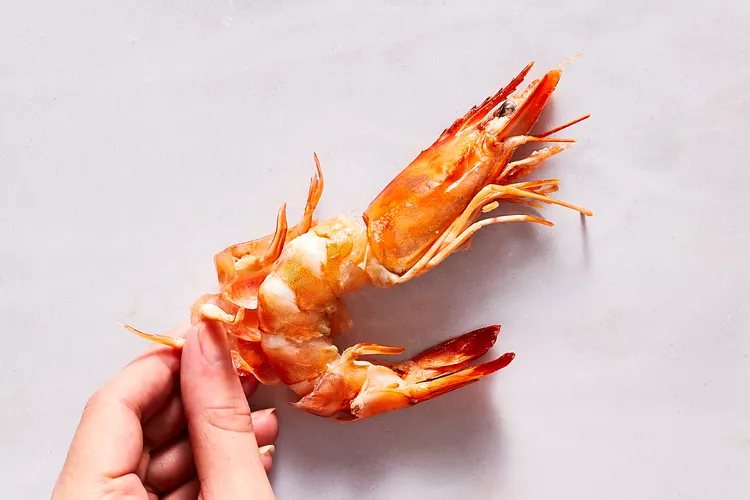

Shrimp

Ingredients
- 8 tablespoons 1 stick unsalted butter, divided
- 1 ½ pounds medium shrimp, peeled and deveined
- Kosher salt and freshly ground black pepper
- 5 cloves garlic, minced
- ¼ cup chicken stock
- 2 tablespoons chopped fresh parsley leaves
Steps
- Heat 1 tablespoon of olive oil in a large skillet over medium heat.
- Put shrimp in a mixing bowl and rub in seasoning mixture.
- Add shrimp to the hot pan and cook for about 2-3 minutes on each side, turning once midway, until shrimp is pink and cooked through
- Serve immediately.